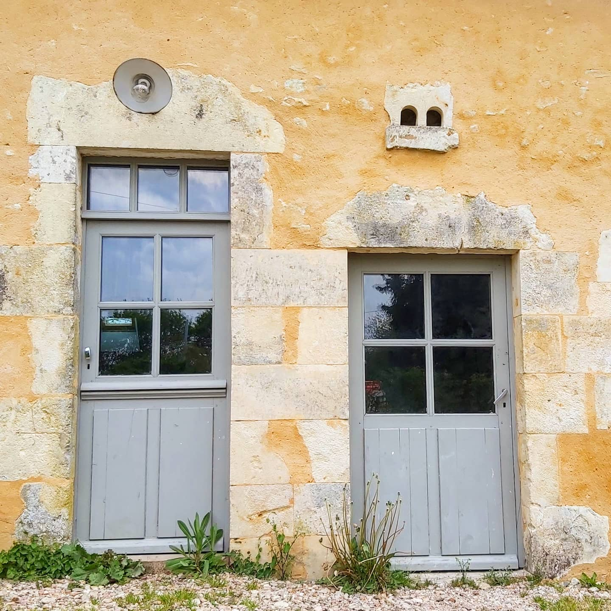

Pourquoi un conseil avant de commencer ?
Restaurer une longère ou une maison de maître dans le Perche ne s'improvise pas. Les matériaux anciens (pierre, chaux, terre cuite) ont des besoins spécifiques, notamment en termes de respiration et de gestion de l'humidité.
Une erreur technique au départ peut avoir des conséquences lourdes sur la pérennité du bâtiment. Notre visite conseil vous apporte la sécurité et le savoir-faire nécessaire pour prendre les bonnes décisions.
- Identification des pathologies du bâti (salpêtre, fissures, remontées capillaires).
- Analyse de la structure et de la faisabilité de vos modifications.
- Conseils sur les matériaux et techniques à privilégier.
Déroulement de la visite
Nous intervenons directement sur votre site pour une analyse approfondie qui dure généralement entre 1h30 et 2h30 selon la complexité du projet.
- Analyse technique : Mesure de l'humidité, examen des fondations et de la charpente.
- Compte-rendu écrit : Vous recevez un document détaillé reprenant l'ensemble du diagnostic et les préconisations.
- Option Devis : Sur demande, nous pouvons établir un chiffrage précis pour les travaux de restauration envisagés.
Forfait comprenant la visite sur site et le compte-rendu de conseil détaillé.
+ Frais de déplacement au-delà de 30km (Berd'huis).
Établissement d'un devis détaillé :
La rédaction d'un chiffrage technique complet est une prestation payante (sur devis), dont le montant est intégralement déduit de votre facture finale si les travaux sont réalisés par nos soins.
Réserver mon conseil